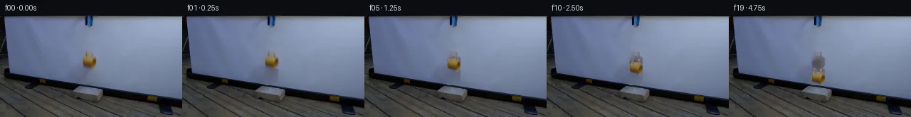

![首帧]()

Round 00
2026-11-06T02:32:49.323412+00:00像素候选变化代码 +482/−0inspection 更新
pixels 50e9d475ebf6b86d · code 81ca816597c3edb2
查看本轮 generate.py 真实 diff
--- previous/generate.py +++ current/generate.py @@ -0,0 +1,482 @@ +""" +PixelWorld-Text: Blue-black grabber releases yellow ceramic mug over concrete brick. +Generates 20 RGB frames at 256x144, 4 fps, 5 seconds. +Frame 00 must exactly equal first_frame.png. + +Method: + - Color-based mug extraction with per-pixel background estimation + - 2D linear gradient background fill for the mug region and fall path + - Cinematic slow-motion gravity simulation + - Layer compositing: background plate + grabber (static) + falling mug (sprite) + - Minor grabber claw adjustments upon release +""" + +import numpy as np +from PIL import Image +from pathlib import Path +import sys + +# Add current dir to path for artifact_io import +sys.path.insert(0, str(Path(__file__).parent)) + +CASE_DIR = Path(__file__).parent +H, W = 144, 256 +N_FRAMES = 20 + +# ── Load first frame ────────────────────────────────────────────── +first = np.array(Image.open(CASE_DIR / "first_frame.png")).astype(np.float64) +assert first.shape == (H, W, 3) + +# ═══════════════════════════════════════════════════════════════════ +# STEP 1: Background estimation (blue projection screen gradient) +# ═══════════════════════════════════════════════════════════════════ + +# Sample background from regions that are clearly background: +# - Right side: x > 140, y=0..100 (blue screen) +# - Gap region: x=110-116, y=50..95 (gap between grabber and mug) +# Use these to fit a 2D linear gradient for each channel + +# Build sample points from known background regions +bg_mask = np.zeros((H, W), dtype=bool) +# Right side (pure background): x > 150 +bg_mask[:, 150:] = True +# Gap between grabber body and mug: x=110-116 +bg_mask[55:95, 110:117] = True +# Top area above grabber: x=110-255, y=0-10 (excluding white hotspot) +bg_mask[3:12, 110:130] = True +bg_mask[0:3, 110:140] = True + +# Also exclude known non-background regions +# Grabber body: x < 110, y < 85 (roughly) +# Mug: x=117-134, y=53-75 +# Table: y > 95 +grabber_body = np.zeros((H, W), dtype=bool) +grabber_body[:85, :110] = True +bg_mask[grabber_body] = False + +# Remove mug area from bg samples +mug_area = np.zeros((H, W), dtype=bool) +mug_area[53:76, 117:135] = True +bg_mask[mug_area] = False + +# Remove table area (y > 95) +bg_mask[95:, :] = False + +# Fit 2D linear gradient: bg_r[y,x] = a_r*y + b_r*x + c_r +ys, xs = np.where(bg_mask) +if len(ys) > 0: + bg_r = first[ys, xs, 0] + bg_g = first[ys, xs, 1] + bg_b = first[ys, xs, 2] + + # Design matrix: [y, x, 1] + A = np.column_stack([ys, xs, np.ones(len(ys))]) + + coeff_r, _, _, _ = np.linalg.lstsq(A, bg_r, rcond=None) + coeff_g, _, _, _ = np.linalg.lstsq(A, bg_g, rcond=None) + coeff_b, _, _, _ = np.linalg.lstsq(A, bg_b, rcond=None) +else: + # Fallback: just use mean + coeff_r = np.array([0, 0, np.mean(first[bg_mask][:, 0])]) + coeff_g = np.array([0, 0, np.mean(first[bg_mask][:, 1])]) + coeff_b = np.array([0, 0, np.mean(first[bg_mask][:, 2])]) + +# Generate background gradient for the entire image +YY, XX = np.meshgrid(np.arange(H), np.arange(W), indexing='ij') +bg_gradient = np.zeros((H, W, 3), dtype=np.float64) +bg_gradient[:, :, 0] = coeff_r[0] * YY + coeff_r[1] * XX + coeff_r[2] … diff truncated; 395 more lines …